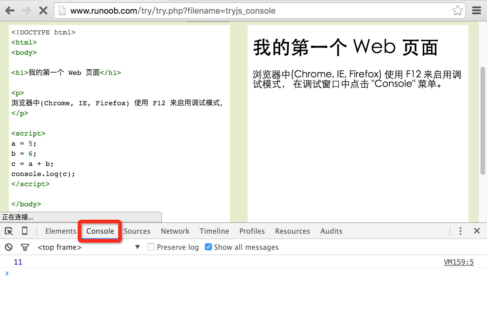
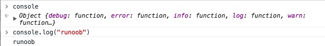

JavaScript Salida
JavaScript no tiene ninguna función de impresión o salida.
Visualización de datos en JavaScript
JavaScript puede generar datos de diferentes maneras:
- Usandowindow.alert()mostrar un cuadro de alerta.
- Usandodocument.write()método para escribir contenido en el documento HTML.
- UsandoinnerHTMLescribir en un elemento HTML.
- Usandoconsole.log()escribir en la consola del navegador.
Usando window.alert()
Puedes mostrar un cuadro de alerta para visualizar datos:
Ejemplo
<html>
<body>
<h1>Mi primera página</h1>
<p>Mi primer párrafo.</p>
<script>
window.alert(5 + 6);
</script>
</body>
</html>
Pruébalo »
Manipulación de elementos HTML
Para acceder a un elemento HTML desde JavaScript, puedes usar document.getElementById(id) método.
Usa el atributo "id" para identificar el elemento HTML y innerHTML para obtener o insertar el contenido del elemento:
Ejemplo
<html>
<body>
<h1>Mi primera página web</h1>
<p id="demo">Mi primer párrafo</p>
<script>
document.getElementById("demo").innerHTML = "El párrafo ha sido modificado.";
</script>
</body>
</html>
Pruébalo »
Las sentencias de JavaScript anteriores (dentro de la etiqueta <script>) se pueden ejecutar en un navegador web:
document.getElementById("demo")es el código de JavaScript que usa el atributo id para buscar el elemento HTML.
innerHTML = "El párrafo ha sido modificado."es el código de JavaScript que se usa para modificar el contenido HTML (innerHTML) del elemento.
En este tutorial
En la mayoría de los casos, en este tutorial usaremos el método descrito anteriormente para la salida:
El ejemplo anterior escribe directamente el elemento <p> con id="demo" en la salida del documento HTML:
Escribir en el documento HTML
Con fines de prueba, puedes escribir JavaScript directamente en el documento HTML:
Ejemplo
<html>
<body>
<h1>Mi primera página web</h1>
<p>Mi primer párrafo.</p>
<script>
document.write(Date());
</script>
</body>
</html>
Pruébalo »
 |
Usando document.write() puedes escribir contenido en el documento. Si se ejecuta document.write después de que el documento haya terminado de cargarse, toda la página HTML será sobrescrita. |
|---|
Ejemplo
<html>
<body>
<h1>Mi primera página web</h1>
<p>Mi primer párrafo.</p>
<button onclick="myFunction()">Haz clic en mí</button>
<script>
function myFunction() {
document.write(Date());
}
</script>
</body>
</html>
Pruébalo »
Escribir en la consola
Si tu navegador admite depuración, puedes usarconsole.log()el método para mostrar valores de JavaScript en el navegador.
En el navegador, usa F12 para activar el modo de depuración y haz clic en el menú "Console" en la ventana de depuración.
Ejemplo
<html>
<body>
<h1>Mi primera página web</h1>
<script>
a = 5;
b = 6;
c = a + b;
console.log(c);
</script>
</body>
</html>
Pruébalo »
Captura de pantalla del ejemplo en consola:

¿Sabías que...?
|
La depuración en programación es el proceso de probar, encontrar y reducir bugs (errores). |
|---|
xmbuxi
896***31@qq.com
Dirección de referencia
La utilidad de console.log()
Sirve principalmente para facilitar la depuración de JavaScript; puedes ver el contenido que has mostrado en la página.
En comparación con alert, sus ventajas son:
Puede ver cosas estructuradas; con alert, si aparece un objeto, se muestra [object object], pero con console se puede ver el contenido del objeto.
console no interrumpe la operación de tu página; si usas alert para mostrar contenido, la página se bloquea, pero después de que console muestra el contenido, tu página puede seguir funcionando con normalidad.
El contenido dentro de console es muy completo; puedes escribir console en la consola y luego verás:

xmbuxi
896***31@qq.com
Dirección de referencia
kera
891***636@qq.com
Dirección de referencia
document.write escribe directamente en el flujo de contenido de la página. Si no se llama a document.open antes de escribir, el navegador llamará a open automáticamente. Cada vez que se vuelve a llamar a esta función después de cerrar, la página se sobrescribe.
innerHTML es una propiedad de los elementos de la página DOM que representa el contenido html de ese elemento. Puedes precisar un elemento concreto para modificarlo. Si deseas modificar el contenido de document, necesitas modificar document.documentElement.innerElement.
innerHTML es superior a document.write en muchos casos, porque permite un control más preciso sobre qué parte de la página se desea actualizar.
kera
891***636@qq.com
Dirección de referencia
Gurú
222***8080@qq.com
Explicación del DOM
A menudo verásdocument.getElementById("id")。
Este método está definido en el HTML DOM.
El DOM (Document Object Model, Modelo de Objetos del Documento) es el estándar oficial de W3C para acceder a elementos HTML.
Formato <script>
Esos ejemplos antiguos pueden usar type="text/javascript" en la etiqueta <script>.
Ahora ya no es necesario hacerlo.
JavaScript es el lenguaje de script predeterminado en todos los navegadores modernos y en HTML5.
Ubicación del script
JavaScript en <head> o <body>
Los scripts externos no pueden contener la etiqueta <script>.
Datos de salida
window.alert() Muestra un cuadro de alerta.
document.write() Método para escribir contenido en el documento HTML.
innerHTML Escribe en un elemento HTML.
console.log() Escribe en la consola del navegador.
Contenido de salida
Usa document.write() para escribir contenido en el documento.
Si se ejecuta document.write después de que el documento haya terminado de cargarse, toda la página HTML será sobrescrita.
Escribir en la consola (modo de depuración)
Usa el método console.log() para mostrar valores de JavaScript en el navegador.
F12 activa el modo de depuración; haz clic en el menú "Console" en la ventana de depuración.
Gurú
222***8080@qq.com
Shi Yao
129***0814@qq.com
Complemento de window.alert:
window.alert(5+6) 与 window.alert("5+6")El valor de salida es diferente. window.alert(5+6) mostrará 11, mientras que window.alert("5+6") mostrará 5+6. Esto se debe a que al usar comillas se considera que lo que está entre comillas es una cadena, por lo que se imprime directamente el contenido entre comillas.
Pruébalo »
Shi Yao
129***0814@qq.com
jingks
249***9451@qq.com
Embellecer console.log
console.log puede añadir estilos de visualización, p. ej.:
console.log('%cfuck', 'font-size:20px')Lo envolvemos con IIFE:
(function() { var _log = console.log; console.log = function() { if (typeof(arguments[0]) != 'object' && typeof(arguments[0]) != 'function' && arguments.length == 1) { _log.call(console, '%c' + arguments[0], "text-shadow: 0 1px 0 #ccc,0 2px 0 #c9c9c9,0 3px 0 #bbb,0 4px 0 #b9b9b9,0 5px 0 #aaa,0 6px 1px rgba(0,0,0,.1),0 0 5px rgba(0,0,0,.1),0 1px 3px rgba(0,0,0,.3),0 3px 5px rgba(0,0,0,.2),0 5px 10px rgba(0,0,0,.25),0 10px 10px rgba(0,0,0,.2),0 20px 20px rgba(0,0,0,.15);font-size:5em") } else { _log.call(console, ...arguments) } } })()El significado del código es que si console tiene un solo parámetro y no es una función ni un objeto, se usa el estilo que definimos; de lo contrario, se usa la entrada predeterminada de console. Luego, con un complemento como Tampermonkey, se carga esta función cuando se carga la página, y así se puede decir adiós a la depuración aburrida original. Por supuesto, también puedes escribir una biblioteca de estilos y una función aleatoria, de modo que cada console tenga sorpresas.
jingks
249***9451@qq.com
思幼安
132***7010@qq.com
Dirección de referencia
Resuelve el problema de que, después de que el documento haya terminado de cargarse, ejecutar document.write sobrescriba toda la página HTML.
<button onclick="winTest()">按钮</button> function winTest() { var txt1 = "This is a new window."; var txt2 = "This is a test."; document.open("text/html","replace");//加上 document.writeln(txt1); document.write(txt2); document.close();//加上 }Pruébalo »
Después de hacer clic en el "botón", la página muestra el resultado:
Nota:Este método cerrará el flujo de documento abierto por el método open() y forzará la visualización de todo el contenido de salida en caché. Si utiliza el método write() para generar dinámicamente un documento, debe recordar llamar al método close() cuando lo haga, para asegurarse de que todo el contenido del documento pueda mostrarse. document.write() no llama implícitamente al método document.close(); de lo contrario, en el ejemplo 2 no habráThis is a new window.contenido.
Una vez que se llama a close(), no se debe volver a llamar a write(), porque esto llamará implícitamente a open() para borrar el documento actual y comenzar un nuevo documento.
Después de cargar la página, el flujo de salida del navegador se cierra automáticamente. Después de esto, por ejemplo, en scripts diferidos [setTimeout()] o métodos ejecutados en onload, cualquier método document.write() que opere sobre la página actual abrirá un nuevo flujo de salida, que borrará el contenido de la página actual (incluyendo cualquier variable o valor del documento original).
思幼安
132***7010@qq.com
Dirección de referencia
陈飘
116***5073@qq.com
La diferencia entre document.getElementByle() y document.write()
El método document.write() se puede utilizar en dos aspectos:
Su segundo punto se diferencia de document.getElementByle(). El primero borra todo el contenido de la página y luego genera contenido nuevo, es decir, "sobrescribir el documento".
<script> function myFunction() { document.write("糟糕，文档丢失了") } </script> <button type="bulbon" onclick="myFunction()">覆盖文档</button>Al hacer clic en el botón, el contenido entre paréntesis sobrescribirá completamente el documento.
La segunda:<script> document.getElementById("three").innerHTML="段落已修改。"; </script>Esto simplemente reemplaza el contenido del elemento con id 'three', sin sobrescribir la página.
陈飘
116***5073@qq.com
白色羽毛
166***9869@qq.com
console.log()El uso también puede ser como en el lenguaje C%spara usar variables:
var hello = 'hello'; var one = 1; console.log('%s world', hello) console.log('%d + 1 = 3', one)白色羽毛
166***9869@qq.com